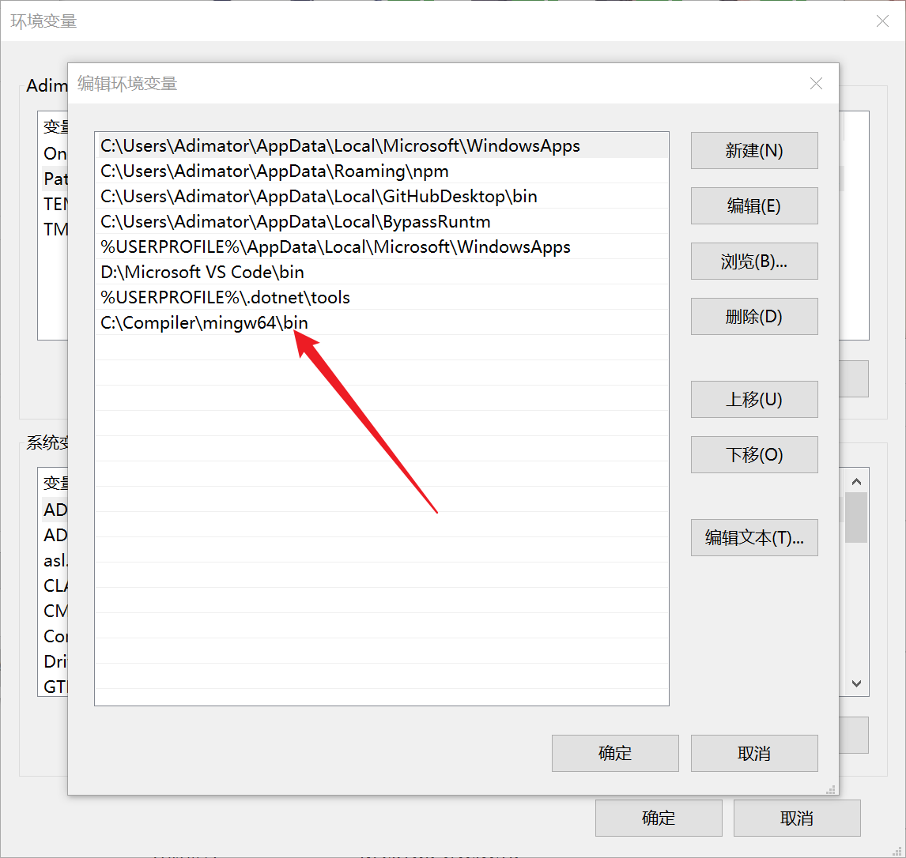
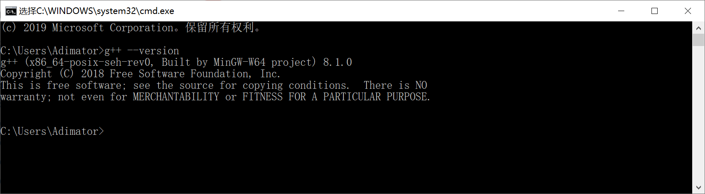

选一个C++文本编译程序，这里选用MinGW-w64
这里通过配置VScode使用，下载对应平台的编译器，这里使用windows的下载资源，下载压缩包
下载压缩包可以提供给vscode使用，只需要解压后，把文件bin目录配置到环境变量path位置 
通过cmd输入，g++ --version获得以下结果即可 
在VScode中安装C++插件
在vscode按shift+ctrl+p，进入C++插件配置
在页面中设置以下配置即可
写入main.cpp文件，按F5配置Vscode的编译配置
配置自动设置完成，F5运行得到结果